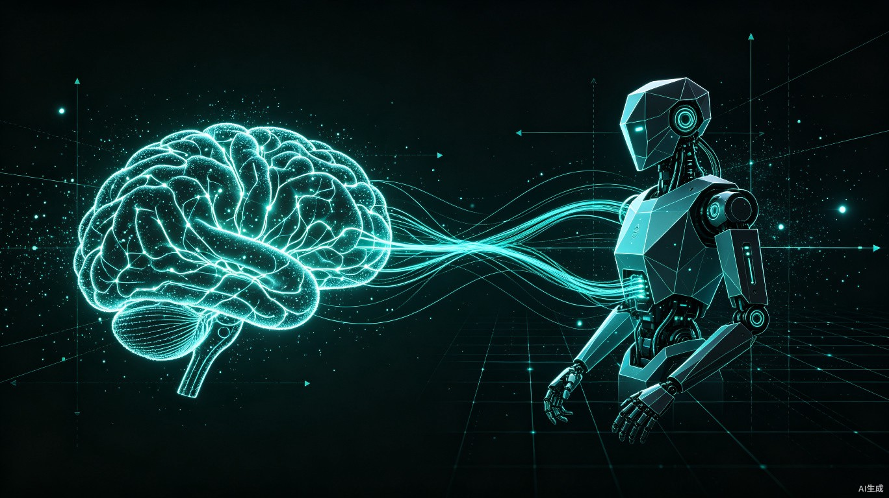
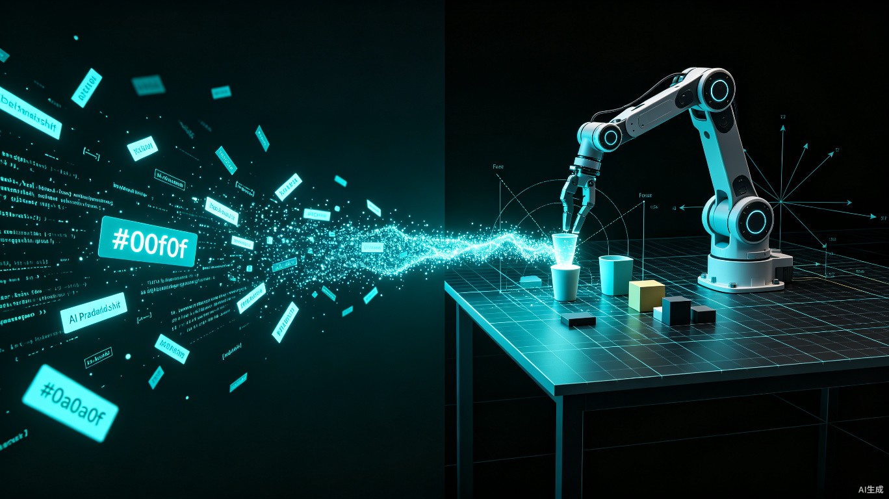
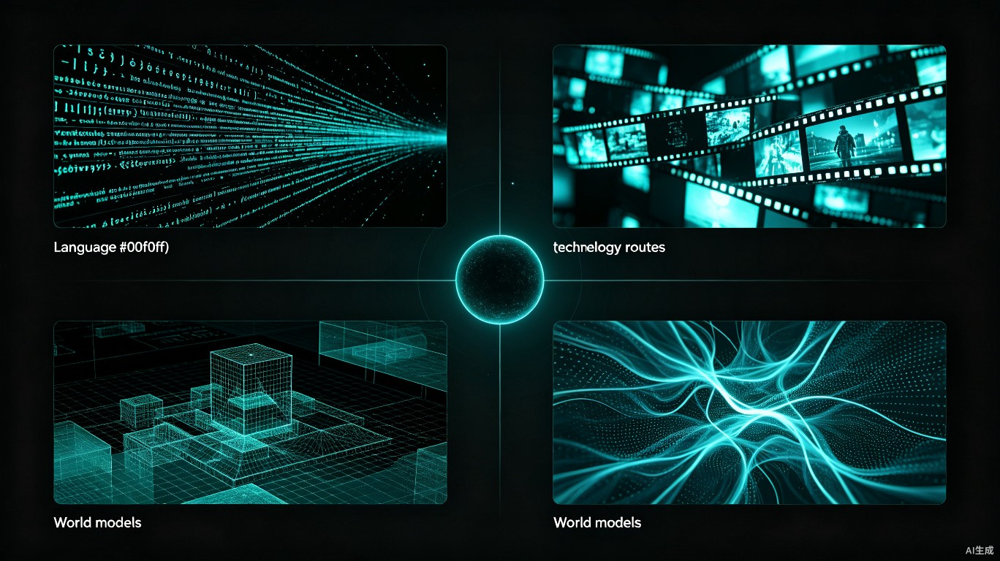
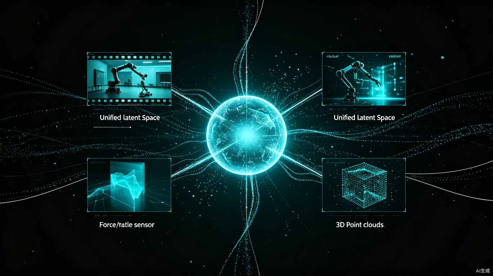
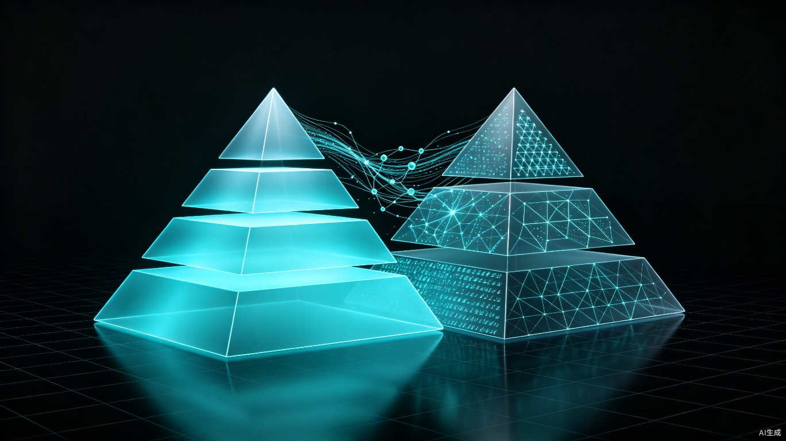

站在从"预测下一个词"向"预测下一个物理状态"跃迁的关键节点，世界模型正成为通往物理AGI的核心桥梁。本文系统梳理世界模型的范式变革、四大技术路线与第五种可能、智源悟界系列最新成果、产业双金字塔体系，以及前路面临的挑战。
一、范式跃迁：从"Next Token"到"Next Physical State"
大语言模型（LLM）的成功建立在Next Token Prediction这一看似简单却极其强大的训练范式之上。GPT系列、Claude、Gemini等主流模型的本质，都是在给定上下文序列的条件下，预测下一个最可能出现的离散token。模型通过海量文本学习了词汇之间的统计共现关系，通过Prompt激发特定领域的知识分布，本质上是一种被动观察——从已有的文本中归纳模式，但从未真正"经历"过文本所描述的物理世界。
然而，当AI要从屏幕走向现实世界，这种范式的根本局限便暴露无遗：
- 无法理解时空连续性：语言是离散的符号序列，而物理世界是连续的时空状态流。LLM无法理解"杯子从桌上滑落"在时间维度上的精确演化过程。
- 无法建立因果关系：LLM学到的是A和B在语料中经常共现，而非"A导致了B"。当遇到训练数据中从未出现过的物理交互场景时，模型只能"猜测"，而非"推理"。
- 缺乏物理常识：一个3岁小孩知道松手后物体会下落、水会从杯子里洒出来，LLM即使读过了所有物理教科书，也无法真正"理解"这些常识——因为它从未在物理世界中体验过重力。
世界模型的核心任务，正是实现从Next Token Prediction到Next Physical State Prediction的范式转变：
| 维度 | 大语言模型（Next Token） | 世界模型（Next Physical State） |
|---|---|---|
| 核心任务 | 预测下一个离散token | 预测下一个连续物理状态 |
| 输出空间 | 离散词汇表（~100K tokens） | 连续高维状态空间（像素/深度/力觉/姿态） |
| 理解深度 | 统计共现关系 | 因果关系 + 物理规律 |
| 激发方式 | Prompt（文本上下文） | State（物理状态 + 动作指令） |
| 交互模式 | 被动观察（仅从文本中学习） | 主动交互（通过动作影响环境并观察结果） |
| 训练数据 | 互联网文本 | 多模态感知 + 物理交互数据（视频、深度、力觉、触觉等） |
| 落地场景 | 文本生成、对话、编程辅助 | 机器人控制、自动驾驶、物理仿真、具身智能 |

正如智源研究院院长王仲远所言："世界模型的核心目标，是让机器人真正'理解'物理世界，而不是只背诵训练轨迹。"这句话精准地指出了当前AI演进的要害——从语言世界的"复读机"，跃迁为物理世界的"理解者"。
从这个视角出发，物理AGI的演进路线可以概括为一条清晰的四阶段路径：
二、核心路线：世界模型的四大探索方向

2025-2026年，世界模型从一个学术概念迅速升温为产业焦点。智源研究院院长王仲远系统归纳了当前全球学术界与产业界正在探索的四条技术路线，每条路线都有其独特的代表性工作、核心假设与根本局限。
2.1 以语言为中心：VLM与VLA
第一条路线延续了语言模型的思路，将"世界"理解为语言空间的延伸。代表性工作包括Google的Gemini 3和Gemini Omni。
在2026年Google I/O大会上，Google正式发布了Gemini Omni，并将其官方定义为"world model"。Gemini Omni实现了统一输入（文本/图像/视频/语音）到统一输出（视频）的能力，本质上是在文本特征空间中完成世界状态的预测。Gemini Omni Flash版本以1527 Elo的成绩登顶Video Arena评测榜，展现了在视频理解和生成方面的强大能力。
然而，这条路线有一个根本性的局限：模型学到的是"语言描述的世界"，而非"物理规律支配的世界"。VLA（Vision-Language-Action）模型在当前的机器人控制任务中确实有用，但其泛化性严重受限于训练数据中语言标注的覆盖范围。当面对语言中从未描述过的物理场景时，VLA模型往往不知所措。
2.2 以像素为中心：视频生成模型的野心与局限
第二条路线试图直接在视觉像素空间中学习世界。代表性工作包括OpenAI的Sora 2和Runway的GWM-1（General World Model）。
Sora 2带来了五大关键升级：物理模拟准确率达到94-95%、支持多镜头叙事一致性、原生声画同步、Cameo数字分身能力、以及iOS端应用。然而，Sora已于2026年3月25日正式停运——这一标志性事件本身就说明，视频生成技术的商业化路径远比预期艰难。
Runway在2025年11月发布了GWM-1通用世界模型，并在2026年3月推出了Characters实时视频智能体。同时，Google Veo 3和字节Seedance也在视频生成赛道上持续竞争。
关键判断：王仲远明确强调，"视频生成模型不等于世界模型"。一个能生成"天上飞的猪"的模型，可能拥有极其逼真的像素渲染能力，但它显然不理解重力定律。生成视觉上逼真的视频，和真正理解支配物理世界的规律，是两件完全不同的事情。
2.3 以三维结构为中心：重建空间不等于理解世界
第三条路线聚焦于三维几何结构的重建，以李飞飞创立的World Labs及其Marble模型为代表。
World Labs在2026年1月开放了World API，支持用户通过文本、图片、全景图或视频生成可交互探索的3D环境。2026年6月，团队密集发布了三篇核心论文：深度感知误差降低57%、遮挡几何预测、以及4D人体建模。公司已获10亿美元融资，是当前世界模型赛道中资金实力最强的玩家之一。
这条路线做出了一个关键取舍：放弃生成"前所未见场景"的能力，将全部算力投入几何结构精度的提升。这意味着Marble模型在重建已有场景的3D结构方面表现卓越，但在创造全新物理交互方面天然受限。
其核心局限同样清晰：重建3D空间不等于理解世界，几何结构不等于物理状态。知道一个杯子在哪里、是什么形状，不等于理解推动杯子时它会怎么移动、会不会翻倒、碎片会飞向哪里。
2.4 以视觉表征为中心：LeCun的JEPA路线
第四条路线由Meta前首席AI科学家Yann LeCun推动，核心思想是在抽象的视觉嵌入空间（而非像素空间或语言空间）中进行世界状态的预测。代表性工作包括V-JEPA 2和AdaJEPA。
V-JEPA 2展现出惊人的效率：仅22M参数的轻量版本，就超过了经过微调的NVIDIA Cosmos模型的性能，所需算力仅为后者的1/50。2026年7月发布的AdaJEPA更进一步，实现了自适应潜在世界模型，能够在部署过程中持续校准其预测，大大降低了模型与现实世界之间的分布偏移。
LeCun在2025年底离开Meta，创立了AMI（Artificial Machine Intelligence），获10.3亿美元种子轮融资。在学术界，VLA-JEPA论文被ECCV 2026接收，将JEPA框架成功移植到VLA架构中。
LeCun的核心论断直指LLM路线的根本缺陷："LLM路线本质上是错误的，世界模型才是实现真正通用AI的关键路径。"他将当前的大语言模型比作"只是系统1（直觉推理）的系统"，缺少"系统2（深思熟虑）"的规划能力，而世界模型正是补齐这一短板的关键。
但这条路线也有其局限：视觉嵌入的演化不等于物理规律的演化。在抽象表征空间中的预测是否忠实于真实物理定律，仍然需要外部校验机制。
三、第五种可能：全模态潜空间建模
在四条既有路线之外，智源研究院正在探索一条更具野心的第五种路线：基于统一潜空间的全模态表征融合。
其核心思想是：将文字、图像、视频、深度、力觉、触觉等全模态数据压缩至同一个语义空间，在这个统一潜空间中完成世界状态的预测与推理。王仲远用一个生动的比喻解释了这个思想："就像一张万能草稿纸——所有感知先压缩成AI能懂的'密语笔记'，需要时再解码为不同的输出格式。"

这不是简单的多模态拼接，而是要求模型在潜空间中建立起跨模态的一致性物理表征——一个杯子在视觉、触觉和力觉三个通道中的表征，必须在物理上一致。
3.1 悟界 Physis-v0.1：全球首个通用世界基座模型
2026年6月12日，在第八届北京智源大会上，智源研究院正式发布了悟界 Physis-v0.1，定位为"全球首个通用世界基座模型"。令人瞩目的是，该项目的负责人陈博远当时仅22岁，是北京大学的一名本科生。
Physis-v0.1展现了四大核心能力：
- 物理一致性：预测的物理状态符合基本物理定律，不会出现违反重力的"天上飞的猪"
- 动作因果可溯：每一个预测结果都可以追溯到导致它的具体动作，而非黑盒输出
- 长程一致性：在50+复杂场景的长时间序列中保持状态一致，不会随时间推移出现"幻觉"
- 通用泛化：在未见过的物体、场景和任务组合上仍能做出合理预测
在模态覆盖方面，Physis-v0.1支持视频、深度RGB、3D点云、力触反馈等全模态输入输出，采用物理隐空间表征替代直接的像素预测——这正是第五种路线的核心体现。团队计划在2026年底发布旗舰模型。
3.2 悟界 RoboBrain Orca：具身大脑
与Physis-v0.1同步发布的还有悟界 RoboBrain Orca，一个面向具身智能的"世界模型驱动大脑"。2026年7月8日，Orca的技术报告登上arXiv，并随即登顶Hugging Face月度第一。论文标题颇具诗意：《Orca: The World is in Your Mind》。
Orca的核心哲学可以用一句话概括："不会让3岁小孩进工厂打10万小时螺丝"。传统具身智能的训练范式是让机器人在特定任务上大量重复练习，就像让小孩通过机械重复来学习。Orca反其道而行——先让模型通过世界模型学习"世界状态如何变化"这一通用知识，再将其迁移到具体的机器人任务上。
这种哲学体现为"想、看、动"三位一体的架构设计：
- 想：世界模型在潜空间中进行物理状态预测与推理
- 看：多模态感知模块将视觉、深度、触觉输入编码为统一表征
- 动：动作读出头将潜空间预测解码为机器人控制指令
Orca的训练数据规模令人印象深刻：12.5万小时视频 + 1.6亿条事件标注 + 1150万条VQA（视觉问答）。训练采用两类互补的学习范式：
- 无意识学习：从连续视频中学习稠密状态变化，对应人类婴儿"无目的探索"阶段
- 有意识学习：以语言和事件语义为条件进行定向学习，对应人类"有目的学习"阶段
模型通过三类"读出"机制来验证其对世界的理解程度：
- 文本读出：能否用语言描述当前物理状态和未来预测（理解与推理验证）
- 图像读出：能否生成未来视觉帧（未来视觉预测验证）
- 动作读出：能否输出机器人控制指令（具身控制验证）
一个特别值得关注的结果是：Orca在预训练阶段未使用任何action label，但通过世界模型的OOD（分布外）泛化能力，仍然为下游机器人控制任务带来了显著增益。这说明世界模型学到的物理知识具有真正的"可迁移性"。
在工程实现上，Orca基于智源自研的FlagScale框架进行分布式训练，在H100集群上将训练吞吐量提升了4.4倍，为大规模世界模型训练提供了可复用的工程基础设施。
四、产业实践：从理论到落地的"双金字塔"
在世界模型从学术走向产业的过程中，国内企业"极佳视界"走在了最前沿。2025年5月20日，极佳视界发布了全球首个物理AGI"双金字塔"体系，系统性地将世界模型的训练数据与算法架构组织为一个可规模化的产业框架。2026年3-4月，极佳视界完成约25亿元融资，跻身国内首个世界模型"百亿独角兽"。

4.1 数据金字塔（五层）
极佳视界构建了一个五层递进的数据金字塔，从最易获取的互联网数据逐步过渡到最珍贵的真机数据：
数据金字塔的目标是到2026年底累计100万小时训练数据。为实现这一目标，极佳视界自研了三款数采硬件：U-01（通用数据采集设备）、E-01（环境数据采集设备）和Maker M01（制作级数据采集设备）。
特别值得一提的是其R2RGen技术（Robot-to-Robot Generation），该技术被RSS 2026（机器人科学旗舰会议）接收，能够从1条真人演示自动生成效果媲美25条真人演示的合成训练数据，极大地降低了数据采集成本。
4.2 算法金字塔（三层）
在算法层面，极佳视界构建了三层金字塔：
- 世界模拟层 — GigaWorld-1：底层世界模型，在WorldArena评测中登顶全球第一，提供物理世界的基础模拟能力
- 动作对齐层 — GigaWorld-Policy：中间层策略模型，在RoboCasa365评测中击败NVIDIA GR00T N1.5登顶，将世界模型的物理理解转化为可执行的动作策略
- 经验强化层 — GigaBrain-0.5M*：顶层自我进化系统，通过世界模型+RL（强化学习）实现持续自我提升，后缀"M*"代表多模态
极佳视界规划了一条清晰的技术路线图：GigaBrain-1（2026 Q3） 将首次实现世界模型与强化学习的深度融合，随后通过GigaBrain-2和GigaBrain-3的迭代，剑指物理AGI的"GPT-3时刻"——即一个能像GPT-3之于NLP一样，彻底改变物理AI格局的通用模型。
4.3 商业化进展
在商业化方面，极佳视界推出了子品牌"拾光SeeLight"，首款家庭机器人拾光S1已斩获百台真实家庭量产订单，标志着世界模型技术正在从实验室走向千家万户。
在B端市场，极佳视界联合一汽模具和阿里云，完成了国内首个具身智能机器人真实工业制造全流程落地，验证了世界模型驱动的具身智能在严苛工业环境中的可行性。
五、产业全景：2026物理AI元年的关键动态
2026年已被多位业界领袖视为"物理AI的元年"。小鹏汽车董事长何小鹏公开表示："2026年将会是AI走向物理世界的元年。"NVIDIA CEO黄仁勋则将Physical AI定义为"下一波万亿级基础设施"。
数据支撑了这一判断：2025年全球人形机器人出货量达到1.8万台，同比增5倍，产业链正在快速起量。
在关键玩家方面：
- NVIDIA：发布Cosmos世界模型、开源GR00T N1.6 VLA模型，推出Jetson Thor边缘计算平台（2000 TOPS算力），构建了从世界模型到机器人芯片的全栈基础设施
- Google：Genie 3实现1080p实时交互式世界生成，Waymo已将其作为自动驾驶世界模型投入实际使用
- Tesla：Optimus人形机器人量产预期持续升温
- Figure AI：发布Skild Brain，聚焦人形机器人的通用大脑
- 宇树科技：2025年出货量突破5500+台，成为全球出货量最大的人形/四足机器人厂商之一
5.1 三大技术阵营
当前产业界围绕"VLA（视觉-语言-动作模型）与世界模型的关系"这一核心问题，已经形成了三大技术阵营：
| 阵营 | 代表企业 | 技术路线 | 核心信念 |
|---|---|---|---|
| VLA为主、世界模型为辅 | NVIDIA、小鹏 | 以VLA为核心控制器，世界模型提供仿真/数据增强 | VLA足够好，世界模型是工具而非核心 |
| 世界模型原生、RL驱动 | World Labs、吉利WAM | 世界模型为核心，通过RL学习动作策略 | 先理解世界，再学习动作 |
| VLA + 世界模型深度融合 | 宇树、智元、特斯拉 | 世界模型与VLA联合训练、互为补充 | 两条路径最终会合二为一 |
王仲远的判断是：VLM、VLA与世界模型呈三条路径收敛之势。短期内三条路径各有侧重，但长期来看，最终会收敛为一个统一架构。
5.2 训练数据范式的转变
2026年产业界的一个关键共识是：世界模型的训练数据范式正在从"统一训练"演化为"分层专业化"。
不同类型的数据承担不同的训练目标：
- 互联网视频 → 学习语义理解（知道世界"长什么样"）
- 第一人称数据 → 学习交互模式与世界知识（知道"如何与世界互动"）
- 仿真数据 → 学习物理约束（知道"物理规律是什么"）
- 机器人演示 → 学习身体映射（知道"如何控制具体身体"）
一个被广泛认可的关键洞察是：仿真数据的最大价值，不是作为训练Dataset，而是作为提供完整世界状态的Teacher。在真实世界中，机器人只能通过有限的传感器观测世界的局部状态；而在仿真环境中，世界模型可以获得每一个物体的精确位置、速度、力的完整状态——这种"全知视角"对于学习物理规律至关重要。
六、前路挑战：概念、数据与评测
尽管方向明确、进展迅速，世界模型领域仍面临三大核心挑战。
6.1 概念尚未统一
当前，"世界模型"一词被广泛用于描述差异巨大的不同事物——从视频生成工具到3D重建引擎，从机器人策略学习器到自动驾驶仿真器。王仲远坦言，技术路线"尚未收敛"，各方对于"什么是世界模型"尚未达成共识。
一个有益的类比是：世界模型大概处在深度学习的2012年前后——AlexNet刚刚证明了深度神经网络的潜力，但ResNet、Transformer等真正改变范式的架构还未出现，ImageNet、BERT等统一评测基准也还在酝酿中。
值得关注的是，在世界模型这一新兴领域，中美站在同一起跑线。智源研究院的悟界系列、极佳视界的双金字塔体系、宇树的具身数据积累，与Google、NVIDIA、World Labs等国际玩家的探索形成了有意义的竞争与合作格局。
6.2 数据极度匮乏
世界模型的训练需要一种前所未有的数据类型：带有精确物理、几何和动作标签的多模态交互数据。
与互联网文本数据的"取之不尽"不同，物理交互数据的获取成本极高：
- 真实物理数据需要昂贵的机器人硬件和人类操作
- 极端工况（碰撞、跌落、异常状态）的样本天然匮乏
- 不同机器人身体的数据互不通用，"换一个身体就要重新学"
但乐观的信号同样存在：世界模型的爆发时间窗口可能比上一轮LLM更短。王仲远估计，从当前的技术突破到产业爆发，可能只需要三到五年——远短于大语言模型从GPT-2到ChatGPT的历程。
6.3 评测体系初建但远未成熟
2026年上半年，五大基准评测集中涌现，标志着世界模型评测体系从零到一的关键突破：
| 评测基准 | 发布机构 | 核心评测维度 | 关键特点 |
|---|---|---|---|
| WorldModelBench | Berkeley / NVIDIA / MIT | 物理合理性、物体一致性、动力学预测 | 学术+产业联合，覆盖面最广 |
| WorldScore | Stanford（李飞飞团队） | 3D场景生成质量、物理真实感 | 聚焦空间理解与视觉真实度 |
| WorldLens | NUS / 浙大 | 跨视角一致性、长时序稳定性 | 强调长时间序列的一致性 |
| WorldArena 2.0 | 清华 / 交大 | 交互决策、任务完成、触觉与真机评测 | 首个扩展到触觉和真机评测的基准 |
| Physics-IQ | INSAIT / Google DeepMind | 纯物理理解能力（排除视觉真实感干扰） | 刻意将"好看"与"正确"解耦 |
从评测结果中可以提炼出几个重要结论：
- 没有单一模型能在所有维度统治榜单——这说明当前技术路线的多样性是真实的，而非炒作
- 视觉真实感与物理理解并不强相关——一个能生成"好看"视频的模型，未必真正理解物理规律；反之亦然
- WorldArena 2.0率先将评测扩展到触觉和真机——这是走向具身落地的关键一步
七、写在最后
AI正沿着一条清晰的路径坚定演进：大语言模型 → 多模态模型 → 世界模型 → 物理AGI。每一步跃迁都不是对前一步的否定，而是在更丰富的感知模态和更深层的世界理解上的积累与突破。
2026年已被多位业界领袖定义为"物理AI的元年"，这一年见证了世界模型从学术概念到产业实践的全面加速。概念尚未统一、数据极度匮乏、评测体系初建——重重的挑战仍在，但方向已明。
正如本文所呈现的，无论是智源研究院悟界系列的全模态潜空间路线、极佳视界的双金字塔产业体系、LeCun的JEPA架构，还是Google、NVIDIA等巨头的全栈布局，都在指向同一个终点：让AI真正理解并操控物理世界。
这条路的终点，不是生成更逼真的视频，不是重建更精密的3D场景，而是让AI在物理世界中拥有真正的理解力、判断力和行动力。
AI，正在叩响触达实体世界的大门。